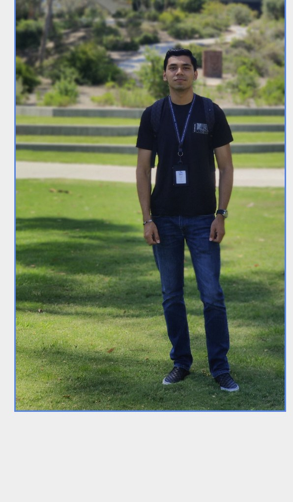

About me
Hi, I'm Victor Perez, a Mechanical Engineering graduate from the University of California, San Diego. I'm passionate about designing, building, and testing engineering solutions that bridge the gap between concept and reality.
My experience spans renewable energy, aerospace, and biomedical engineering projects, with a focus on mechanical design, prototyping, experimental testing, and data analysis. Throughout my academic and research experiences, I've worked on projects including vertical-axis wind turbines, RC aircraft, automated sensing systems, and wearable biosensing devices. These opportunities have allowed me to develop strong technical skills while gaining hands-on experience in fabrication, troubleshooting, and system integration.
I'm proficient in Autodesk Fusion 360, AutoCAD, and MATLAB, and I enjoy transforming ideas into functional prototypes through an iterative design process. Whether developing a mechanical system, analyzing experimental data, or optimizing a design for manufacturing, I'm driven by curiosity, creativity, and a desire to solve meaningful problems.
This portfolio showcases a selection of projects that reflect my interests in product development, renewable energy technologies, and engineering innovation. I'm excited to continue growing as an engineer and contributing to projects that create a positive impact.
